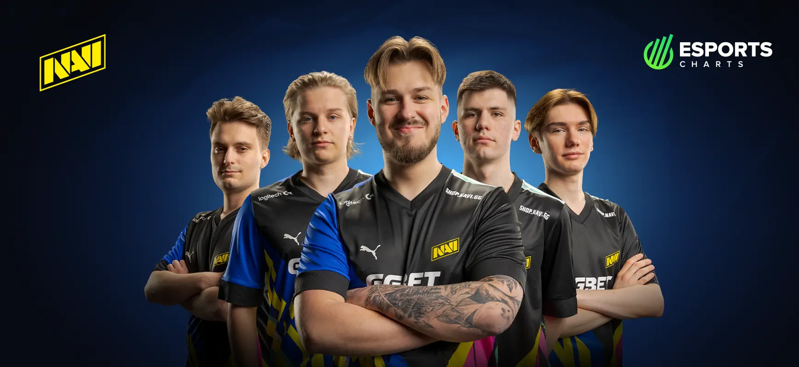

NAVI a.k.a Natus Vincere is Latin and it means "Born to win"
NAVI is an Ukraininan e-sports organisation that has teams in many different games. NAVI's Counter-strike 2 team is currently one of the best in the world and was seen in many different tournament finals last year.
Link to the NAVI's official website